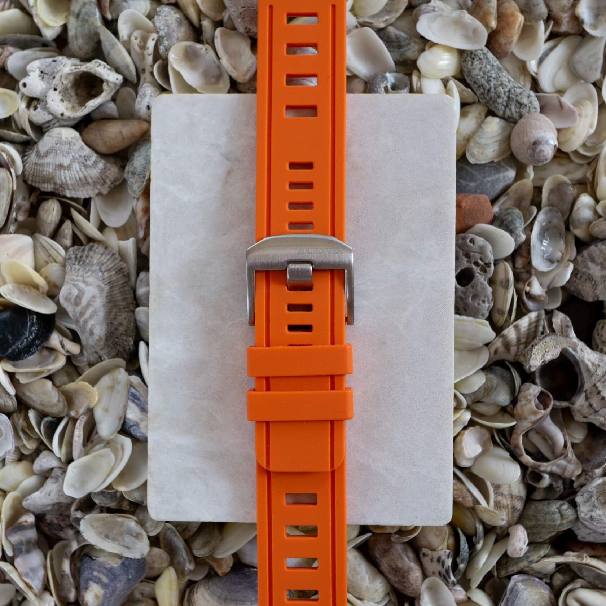

<!DOCTYPE html>
<html lang="sr" dir="ltr">
<head>
	<meta charset="utf-8">
	<title>Review: Divers Silicone Strap by ZULUDIVER | Strap Hunter</title>
	<link rel="stylesheet" href="css/edit.css">
	<meta name="viewport" content="width=device-width, initial-scale=1">

	<link rel="preconnect" href="https://fonts.googleapis.com"><link rel="preconnect" href="https://fonts.gstatic.com" crossorigin><link href="https://fonts.googleapis.com/css2?family=Inter:wght@400;700&display=swap" rel="stylesheet">
	
	<meta name="description" content="This Divers Silicone Strap by ZULUDIVER is affordable, comfortable, packed with features, and unfortunately discontinued." />

	<meta property="og:title" content="Review: Divers Silicone Strap by ZULUDIVER" />
	<meta property="og:url" content="https://www.straphunter.com/r018" />
	<meta property="og:description" content="This Divers Silicone Strap by ZULUDIVER is affordable, comfortable, packed with features, and unfortunately discontinued." />
	<meta property="og:type" content="website" />

	<link rel="canonical" href="https://www.straphunter.com/r018" />

	<meta property="og:image" content="https://www.straphunter.com/images/zuludiver-silicone-strap-hero.jpg" />

	<meta name="twitter:card" content="summary_large_image" />
	<meta name="twitter:image" content="https://www.straphunter.com/images/zuludiver-silicone-strap-hero.jpg" />


	<!-- Google Tag Manager 
	<script>(function(w,d,s,l,i){w[l]=w[l]||[];w[l].push({'gtm.start':
		new Date().getTime(),event:'gtm.js'});var f=d.getElementsByTagName(s)[0],
	j=d.createElement(s),dl=l!='dataLayer'?'&l='+l:'';j.async=true;j.src=
	'https://www.googletagmanager.com/gtm.js?id='+i+dl;f.parentNode.insertBefore(j,f);
})(window,document,'script','dataLayer','GTM-PGPN538');</script>
  End Google Tag Manager -->
	<script defer async data-host="straphunter.com" data-events="true" src="https://liteanalytics.com/lite.js"></script>  
	
<script defer type="application/ld+json">
{
  "@context": "http://schema.org",
  "@graph": [
    {
      "@context": "https://schema.org",
      "@type": "Product",
      "name": "Divers Silicone Strap by ZULUDIVER",
      "description": "The silicone strap is soft and comfortable. It features sturdy quick-release spring bars and a solid buckle. The strap doesn't taper and has square cut-offs. Optimal hole spacing ensures a perfect fit.",
      "image": {
        "@type": "ImageObject",
        "url": "https://www.straphunter.com/images/zuludiver-silicone-strap-hero.jpg",
        "height": "1643",
        "width": "2464"
      },
      "brand": {
        "@type": "Thing",
        "name": "ZULUDIVER"
      },
      "review": {
        "headline": "Review of the Divers Silicone Strap by ZULUDIVER",
        "name": "Divers Silicone Strap by ZULUDIVER",
        "mainEntityOfPage": {
          "@type": "WebPage",
          "@id": "https://www.straphunter.com/r018"
        },
        "description": "The silicone strap is soft and comfortable. It features sturdy quick-release spring bars and a solid buckle. The strap doesn't taper and has square cut-offs. Optimal hole spacing ensures a perfect fit.",
        "datePublished": "2024-01-23T10:15:16-05:00",
      "image": {
        "@type": "ImageObject",
        "url": "https://www.straphunter.com/images/zuludiver-silicone-strap-hero.jpg",
        "height": "1643",
        "width": "2464"
      },
        "author": {
          "@type": "Person",
          "name": "Nenad Pantelic",
          "url": "https://www.straphunter.com/nenad",
          "sameAs": [
            "https://www.instagram.com/nenadpantelic/",
            "https://twitter.com/NenadPantelic",
            "https://www.watchcrunch.com/nenadp"
          ],
          "jobTitle": "Author"
        },
        "publisher": {
          "@type": "Organization",
          "name": "Strap Hunter",
          "url": "https://www.straphunter.com",
          "founder": {
            "@type": "Person",
            "email": "pantelic@hey.com",
            "familyName": "Pantelic",
            "givenName": "Nenad",
            "jobTitle": "Founder"
          },
          "logo": {
            "@type": "ImageObject",
            "url": "https://www.straphunter.com/images/logo.png",
            "width": "278",
            "height": "278"
          },
          "sameAs": [
            "https://www.instagram.com/straphunter/"
          ]
        },
        "reviewRating": {
          "@type": "rating",
          "ratingValue": 4.1,
          "worstRating": "0",
          "bestRating": "5"
        },
        "positiveNotes": {
          "@type": "ItemList",
          "itemListElement": [
            {
              "@type": "ListItem",
              "position": 1,
              "name": "Build quality"
            },
            {
              "@type": "ListItem",
              "position": 2,
              "name": "Comfort"
            },
            {
              "@type": "ListItem",
              "position": 3,
              "name": "Almost perfect adjustability"
            },
            {
              "@type": "ListItem",
              "position": 4,
              "name": "Cool heavy-duty buckle"
            },
			{
              "@type": "ListItem",
              "position": 5,
              "name": "Quick-release spring bars"
            }
          ]
        },
        "negativeNotes": {
          "@type": "ItemList",
          "itemListElement": [
            {
              "@type": "ListItem",
              "position": 1,
              "name": "Strap doesn'\t taper"
            },
			{
              "@type": "ListItem",
              "position": 2,
              "name": "It's not fully lint-repellent"
            }
          ]
        }
      }
    }
  ]
}
</script>
</head>

<body>
	<!-- Google Tag Manager (noscript) 
	<noscript><iframe src="https://www.googletagmanager.com/ns?id=GTM-PGPN538"
		height="0" width="0" style="display:none;visibility:hidden"></iframe></noscript>
		 End Google Tag Manager (noscript) -->

		<div class="nav-container">
			<nav>
				<div class="logo">
					<a href="https://www.straphunter.com"></a>
				</div>
				<div class="nav-links">
					<a class="svinav" href="https://www.straphunter.com">Home</a> 
	
	<div class="dropdown">
    <input type="checkbox" id="checkbox-toggle">
    <label for="checkbox-toggle">Stores</label>
	
	<div class="mega-menu-wrapper">
	<div class="mega-menu-content">
	
	<div class="nav-cat-wrapper">
	<a class="nav-bold-link" href="leather">Leather</a>
	<ul class="nav-sub-ul">
        <li><a href="leather">All leather</a></li>
		<li><a href="alligator">Alligator</a></li>
		<li><a href="buttero">Buttero</a></li>
        <!-- <li><a href="bund">Bund</a></li> -->
		<li><a href="calfskin">Calfskin</a></li>
		<li><a href="chromexcel">Chromexcel</a></li>
		<li><a href="crocodile">Crocodile</a></li>
		<!-- <li><a href="deployant">Deployant</a></li> -->
        <li><a href="epsom">Epsom</a></li>
		<li><a href="goatskin">Goatskin</a></li>
		<li><a href="lizard">Lizard</a></li>
        <li><a href="ostrich">Ostrich</a></li>
        <li><a href="pigskin">Pigskin</a></li>
		<li><a href="pueblo">Pueblo</a></li>
		<li><a href="saffiano">Saffiano</a></li>
		<li><a href="shell-cordovan">Shell Cordovan</a></li>
		<li><a href="suede">Suede</a></li>
    </ul>
	</div>
	
	
	<div class="nav-cat-wrapper">
	<a class="nav-bold-link" href="pass-through">Pass-through</a>
	<ul class="nav-sub-ul">
        <li><a href="pass-through">All pass-through</a></li>
		<li><a href="canvas-pass-through">Canvas mil strap</a></li>
		<li><a href="leather-pass-through">Leather mil strap</a></li>
		<li><a href="ribbed-nylon">Ribbed nylon</a></li>
        <li><a href="rubber-pass-through">Rubber mil strap</a></li>
		<li><a href="single-pass">Single pass</a></li>
		<li><a href="zulu">Zulu</a></li>
    </ul>
	
	<a class="nav-bold-link" href="rubber">Rubber</a>
	<ul class="nav-sub-ul">
        <li><a href="rubber">All rubber</a></li>
		<li><a href="rubber-pass-through">Rubber mil strap</a></li>
    </ul>
	</div>	

	
	<div class="nav-cat-wrapper">
	<a class="nav-bold-link" href="metal">Metal</a>
	<ul class="nav-sub-ul">
        <li><a href="metal">All metal</a></li>
		<li><a href="beads-of-rice">Beads of rice</a></li>
		<li><a href="mesh">Mesh bands</a></li>
    </ul>
	
	<a class="nav-bold-link" href="canvas">Canvas</a>
	<ul class="nav-sub-ul">
        <li><a href="canvas">All canvas</a></li>
		<li><a href="cordura">Cordura</a></li>
		<li><a href="canvas-pass-through">Canvas mil strap</a></li>
		<li><a href="sailcloth">Sailcloth</a></li>
    </ul>
	</div>	
	

	<div class="nav-cat-wrapper">
	<a class="nav-bold-link" href="custom">Custom</a>
	<a class="nav-bold-link" href="handmade">Handmade</a>
	<a class="nav-bold-link" href="elastic">Elastic</a>
	<a class="nav-bold-link" href="bronze">Bronze</a>
	<a class="nav-bold-link" href="perlon">Perlon</a>
	<a class="nav-bold-link" href="bund">Bund</a>
	<a class="nav-bold-link" href="deployant">Deployant</a>
	<a class="nav-bold-link" href="21mm">21mm straps</a>
	<a class="nav-bold-link" href="all">All stores<span class="main-nav-notif">106</span></a>
	</div>	
	
	</div>
	</div>
	</div>
	
	<!--  <a href="best">Best Buys</a>   <a href="blog">Blog</a>--> 
	
	<a href="deals">Deals</a>
	<a href="reviews">Reviews</a> <a href="blog">Blog</a>
				</div>
			</nav>
		</div>


		<div class="all">
		<h1>Review of the 1960s Swiss-Style Divers Silicone Strap by ZULUDIVER</h1>
			
		<p class="lead">In the last couple of years, FKM straps have been dominating the market. Rightfully so, as the material is excellent for watch straps. So what happens when a company like ZULUDIVER offers a diver's rubber strap that is not made from FKM? <br>Well, silicone strikes back big time!</p>
						
		<p class="f14 avatar"> <a href="nenad" class="bio-link">Nenad Pantelic</a>  January 23, 2023</p>
	
			
			<figure style="margin: 3rem 0;">
			  
			</figure>
			
			
			
			<div class="score">
			
			<div class="score-main">
			<div class="score-number">81</div>
			<div class="score-item">Divers Silicone Strap by ZULUDIVER
			<span>StrapHunter rating 81 out of 100</span></div>
			</div>	
				
				<table class="review-score">
				
				<tr>
				<td>Quality</td>
				<td><progress value="77" max="100"> 77</progress></td>
				</tr>
				
				<tr>
				<td>Comfort</td>
				<td><progress  value="86" max="100"> 86</progress></td>
				</tr>
				
				<tr>
				<td>Design</td>
				<td><progress  value="82" max="100"> 82 </progress></td>
				</tr>
				
				<tr>
				<td>Durability</td>
				<td><progress  value="80" max="100"> 80</progress></td>
				</tr>
		
				
				</table>

			<p class="f16"><strong>The verdict</strong>: This Divers Silicone Strap by ZULUDIVER is affordable, comfortable, packed with features, and... unfortunately discontinued.</p>
			
			</div>
			
			
			<div class="pros-cons border-bottom">
			
			<div class="pros">
			<h3>What we like?</h3>
			<ul class="lista">
			<li>Build quality</li>
			<li>Comfort</li>
			<li>Almost perfect adjustability</li>
			<li>Cool heavy-duty buckle</li>
			<li>Quick-release spring bars</li>
			</ul>
			
			</div>
			
			
			<div class="cons">
			<h3>What we don't like?</h3>
			<ul class="lista nolike">
			<li>Strap doesn't taper</li>
			<li>It's not fully lint-repellent</li>
			</ul>
			</div>
			</div>
			
			
			<h2>The Full Review</h2>
			
			
			<p>The 1960s was a transformative period for scuba diving. Firstly, there was a surge in interest as equipment became more accessible, and diving destinations were increasingly promoted as tourist attractions. More importantly, diving equipment evolved during the 1960s. Improved regulators, buoyancy control devices, and wetsuits became more widely available, cheaper, and of better quality.</p>

			<p>No wonder companies tried to improve the functionality and usability of dive watches (and straps), as they were primarily used as tools.</p>

			<p>One of the most popular designs of straps was perforated straps. They enabled better adjustability and better wearability.</p>

			<p>The design stuck, and today I am reviewing a strap that has that distinctive '60s design, but is made from a modern material. No, we are not talking about the FKM. This one is made from silicone. Let's dive in (put fully indented). </p>
			
			<br>
			<p><strong>Technical details</strong></p>
			
			<table>
			
			
			<tr>
			<td>Brand</td>
			<td>ZULUDIVER</td>
			</tr>
			
			
			<tr>
			<td>Width</td>
			<td>22mm</td>
			</tr>
			
			<tr>
			<td>Tapering</td>
			<td>None</td>
			</tr>
			
			<tr>
			<td>Length</td>
			<td>120mm + 80mm</td>
			</tr>
			
			<tr>
			<td>Thickness</td>
			<td>3mm</td>
			</tr>
			
			<tr>
			<td>Material</td>
			<td>Silicone</td>
			</tr>
			
			<tr>
			<td>Color</td>
			<td>Orange</td>
			</tr>
			
			<tr>
			<td>Finishing</td>
			<td>Matte</td>
			</tr>
			
			<tr>
			<td>Buckle</td>
			<td>Brushed 316L stainless steel</td>
			</tr>
			
			<tr>
			<td>Spring bars</td>
			<td>Integrated quick-release spring bars</td>
			</tr>
			
			
			</table>
		

			<p>Apart from orange, this silicone model comes in navy blue or black colors. The colors are matte, having just the right amount of vibrancy to ensure they aren't dull or monotonous.</p>
			


			<h2>Company and Ordering Experience</h2>

			<p><a data-lta-event="review 60s Divers silicone r018"  target="_blank" rel="noopener" class="company-link" href="https://www.watchgecko.com/">WatchGecko</a> is awesome. They have a very good website, well-organized, with clear navigation, fantastic filtering options, amazing photos, and superlative product listing pages.</p>

			<p>The website runs on Shopify, so the cart management and the whole ordering process are straightforward and easy. "Frictionless" is the right word to describe it.</p>

			<p>They have a pretty cool after-sales experience as well. I've become a returning customer. You'd become a returning customer.</p>

			<p>In my opinion, Watchgecko is the leader in the watch strap market, and if you are a brand reading this review, then please, try to be like WatchGecko.</p>


			<h2>Design and Materials</h2>

			<p>The strap is made from silicone. The material is very soft, pliable, and comfortable. The surface is not sticky but has a kind of velvety feel to the touch. Silicone material does not bite and stick to the wrist too much.</p>

			<p>I have bought one strap in orange and one in black color. For some reason, the orange one does not attract dust, but the black one does. Dunno why that happens. 🤷</p>

			<p>The strap has integrated quick-release spring bars. They do not feel flimsy but sturdy.</p>

			<p>The strap does not taper at all. It is perforated with square cut-offs. The buckle is really solid, with a wide tang. Holes for the tang are optimally spaced and enable me to get a perfect fit. One of the biggest upsides of this strap.</p>


			<figure>
			  
			  <figcaption>The buckle is really solid, it is signed with the ZULUDIVER logo, and has a wide tang.</figcaption>
			</figure>		


			<figure>
			  
			  <figcaption>The strap has integrated quick-release spring bars which are very sturdy.</figcaption>
			</figure>			
						
		
		

		

			<h2>Comfort and Durability</h2>

			<p>To reiterate the last line from the previous section: Holes for the tang are optimally spaced, and enable me to get a perfect fit. One of the biggest upsides of this strap.</p>

			<p>Additionally, the material easily conforms to the wrist, so the overall wearing experience is great.</p>

			<p>One downside might be the thickness, as each piece is 3mm thick. But let's be real: you won't wear this strap with a shirt and try to squeeze it underneath the cuff.</p>

			<p>When it comes to durability, I haven't had any issues. It has held up nicely so far.</p>
							
	

			<figure>
			  
			  <figcaption>The material is very soft, pliable, and comfortable. </figcaption>
			</figure>		

			<figure>
			  
			  <figcaption>The surface is not sticky but has a kind of velvety feel to the touch.</figcaption>
			</figure>		
		
			
			<p class="post-quote"><strong>Initial Usage</strong>
			The strap was very soft and conformed easily. It was comfortable from the get-go. Quick-release spring bars worked well, and they were a joy to use.</p>
			
			<p class="post-quote"><strong>Two months of use</strong>
			Despite having worn the strap outdoors and even having submerged it in water a few times, the color has not faded. Also, the hole for the buckle pin still looks like new. The strap is still super comfortable.</p>


			<h2>Compatibility and Pairing Recommendation</h2>

			<p>If you plan to put the watch on for water activities, or for hiking, or for other outdoor activities, then you can confidently use this strap.</p>

			<p>It fits most sport watches, both slender and top-heavy.</p>

			<p>Here is the showcase of the strap on multiple sport watches from my collection.</p>
			
				


			<figure>
			  
			  <figcaption>Holes for the tang are optimally spaced and enable me to get a perfect fit.</figcaption>
			</figure>	
			
			<figure>
			  
			  <figcaption>It fits most sport watches, both slender and top-heavy.</figcaption>
			</figure>
			
			<figure>
			  
			  <figcaption>Silicone easily conforms to the wrist, so the overall wearing experience is great.</figcaption>
			</figure>

			
			<h2>Where to buy</h2>

			<p>Unfortunately, this strap has been discontinued. I am confident that Watchgecko will have something similar soon in their offerings. </p>

			<p><a data-lta-event="review 60s Divers silicone r018"  target="_blank" rel="noopener" class="company-link" href="https://www.watchgecko.com/collections/rubber-dive-watch-straps">Check here</a> to see the available rubber straps they have at the moment</p>

			<h2>My Final Thoughts &amp; Wrap-up</h2>

			<p>I bought this model because I wanted to test how narrow buckle hole distance would help with finding the perfect fit. I was initially skeptical about the strap being made from silicone, not from <a class="company-link" href="rubber">rubber or FKM</a>. My past (poor) experiences with silicone straps were the reason for my skepticism.</p>

			<p>Boy, I was wrong. This is a really good strap. The silicone material feels great, and the wearability is excellent.</p>

			<p>I look forward to seeing what <a class="company-link" href="zuludiver">ZULUDIVER</a> and <a class="company-link" href="watchgecko">WatchGecko</a> will do next. In the meantime, I'll enjoy strapping on these '60s diver straps and putting them into more frequent rotation. Silicone strikes back indeed!</p>
						
			<br><div class="border-bottom"></div><br>

			<div class="score">
			<div class="score-main">
			<div class="score-number">81</div>
			<div class="score-item">Divers Silicone Strap by ZULUDIVER
			<span>StrapHunter rating 81 out of 100</span></div>
			</div>
			</div>
			
		</div>
		
		<!--
		
			<a class="company-link" href="xxxxxxxx">
			
			
			<a target="_blank" rel="noopener nofollow" class="company-link" href="xxxxxxxxx">
		
			<figure>
			  
			  <figcaption>xxxxxxxxxxxxxxxx</figcaption>
			</figure>	
			
					
			<figure>
			  
			  <figcaption>xxxxxxxxxxxxxxx</figcaption>
			</figure>
			
			-->
	
		
			<section id="company-gallery" class="white-bg">
				<div class="company-gallery-container">

					<h2>Product showcase</h2>

					<div class="photo-gallery">
						
						
						
						
						
						
						
						
					</div>

					<p>This Divers Silicone Strap by ZULUDIVER is affordable, comfortable, packed with features, and... unfortunately discontinued.</p>

				</div>
			</section>
		<footer class="white-bg">
			<div class="fl contact">
				<a href="/">Home</a> <a href="about">About</a> <a href="for-businesses">For Businesses</a> <!--  --> <a href="privacy">Privacy</a> <a href="terms">Terms</a> <a href="disclaimer">Disclaimer</a> <a href="https://www.instagram.com/straphunter/" rel="noopener nofollow" target="_blank">Instagram</a> <a href="contact">Contact</a>
			</div>
			<p class="small">Copyright &copy; 2024 - All rights reserved</p>
		</footer>

	</body>
<script>"use strict";document.addEventListener("DOMContentLoaded", function(){function uncheckBox(){var checkbox=document.querySelector("#checkbox-toggle");var isChecked=checkbox.checked;if (isChecked){checkbox.checked=false;}}document.body.addEventListener("click", function(){uncheckBox();}); var checkboxToggle=document.querySelector("#checkbox-toggle"); var label=document.querySelector("label"); checkboxToggle.addEventListener("click", function(e){e.stopPropagation();}); label.addEventListener("click", function(e){e.stopPropagation();});});</script>
	</html>
